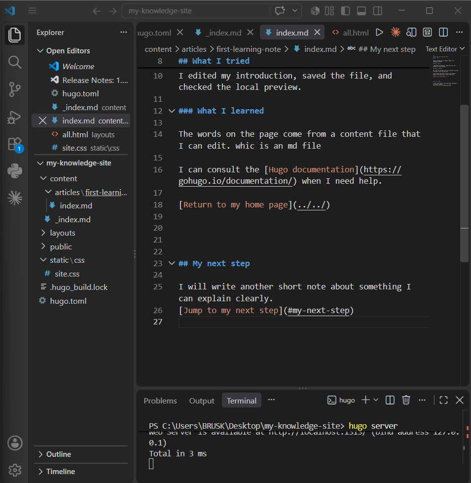

My first learning note
Today I learned how to change a page in my knowledge notebook.
What I tried
I edited my introduction, saved the file, and checked the local preview.
What I learned
The words on the page come from a content file that I can edit. whic is an md file
I can consult the Hugo documentation when I need help.
My VS code

My home page after editing the introduction. Screenshot by the author.
hugo server -D
My next step
I will write another short note about something I can explain clearly. Jump to my next step